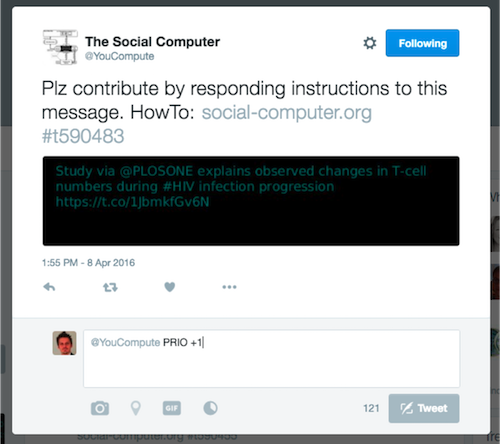
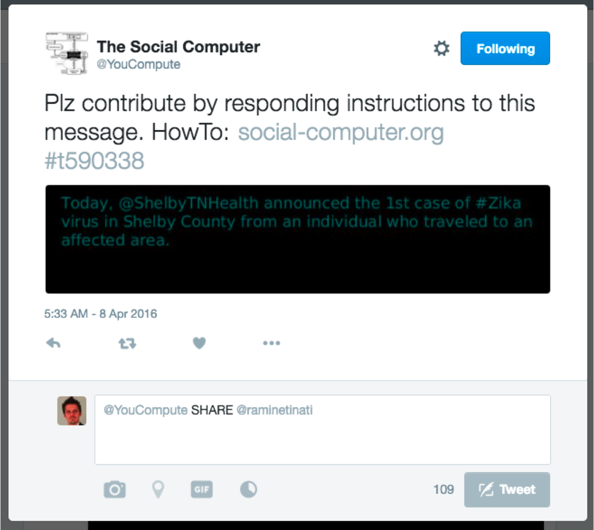
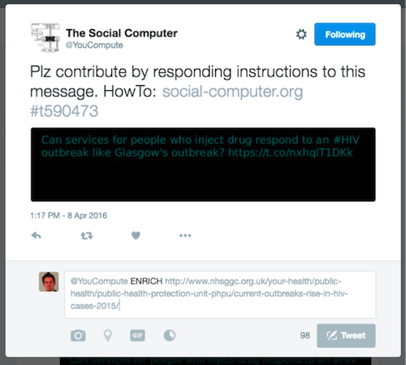
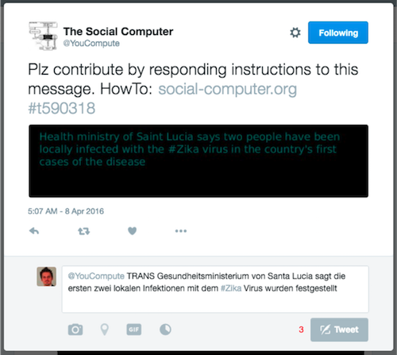
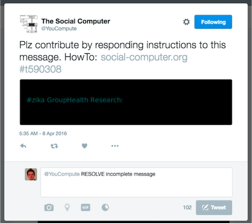

The Social Computer is a prototype of a computing machine that is fully driven by human activity and input. The engine reacts upon bursts of activity on the social Web and autonomously engages with human users to stimulate their contributions to crowdsourcing microtasks. Currently the system can interact with users on Twitter and facebook as well as via a Chrome extension.
The Social Computer supports a set of fundamental instructions. By responding with these instructions and your additional input to messages the Social Computer sends out via Twitter or facebook the users shape the algorithms the Social Computer runs.
| Instruction | General syntax | Example usage |
| Prioritize message | PRIO [+1|-1] |  |
| Pass message | SHARE [userid1,userid2,...,useridN] |  |
| Enrich message | ENRICH [your message, hashtags or URIs] |  |
| Translate message | TRANS [your translation of original content] |  |
| Resolve message | RESOLVE [your message to resolve this message] |  |
The detailed documentation is currently under development. You can access the source code of the middleware components and the Chrome extension to run with a demo instance here
If you have any questions please contact Markus Luczak-Roesch